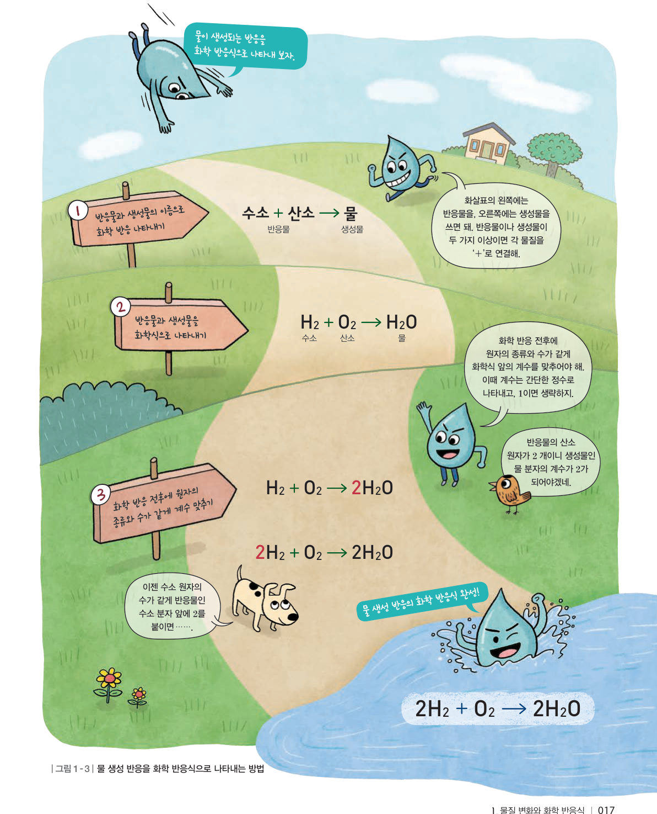
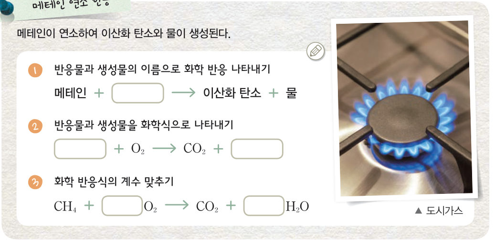
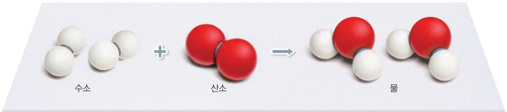
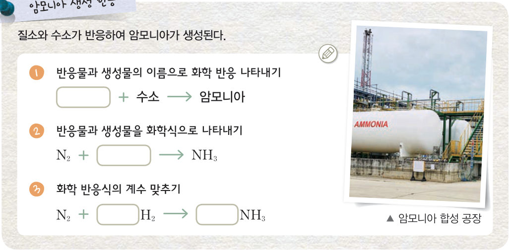
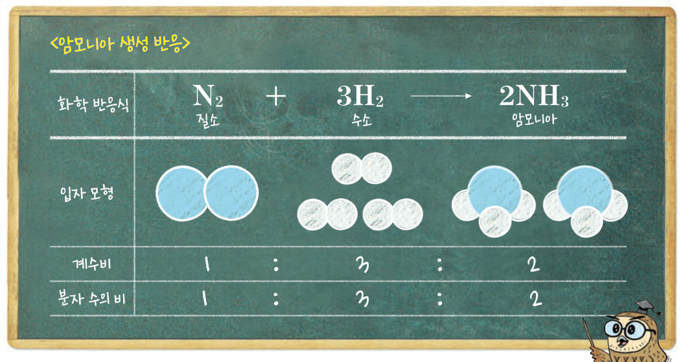
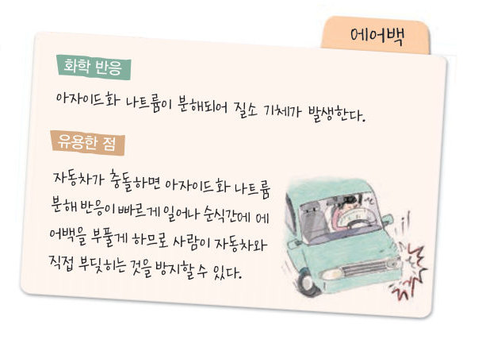

메테인이 연소하는 반응을 간단히 나타내는 방법은 무엇일까? 계수 맞추기 실험실에서 원자 모형을 늘였다 줄였다 하며 화학 반응식을 완성하고, 분자 공장에서 계수비가 분자 수의 비라는 것을 확인해 보자.
수소와 산소가 반응하면 화학 변화가 일어나 새로운 물질인 물이 생성된다. 이처럼 화학 변화가 일어나는 과정을 화학 반응이라고 한다. 화학 반응이 일어날 때 그림 1-2와 같이 원자의 배열은 달라지지만, 원자의 종류와 수는 변하지 않는다. 즉, 화학 반응이 일어나면 원자의 배열이 달라져 반응 전 물질과 다른 새로운 물질이 생성된다.

화학 반응을 모형으로 표현하면 복잡한 화학 반응을 나타내기 어렵다. 그러나 화학식을 이용하면 복잡한 화학 반응도 간단히 나타낼 수 있다. 화학식을 이용하여 화학 반응을 나타낸 것을 화학 반응식이라고 한다. 화학 반응이 일어날 때 원자가 새로 생기거나 없어지지 않으므로 화학 반응식에서 반응 전후에 원자의 종류와 수가 같게 계수를 맞추어야 한다.
화학 반응을 화학 반응식으로 나타내면 물질 변화를 쉽게 이해할 수 있다. 다음 탐구에서 몇 가지 간단한 화학 반응을 화학 반응식으로 나타내 보자.

| 평가 기준 | 스스로 평가 |
|---|---|
| 탐구 기능 화학 반응을 화학 반응식으로 옳게 나타내었는가? | |
| 탐구 기능 화학 반응식에서 알 수 있는 사실을 옳게 설명하였는가? | |
| 인성 탐구 활동에 적극적으로 참여하였는가? |
화학 반응식으로 화학 반응에 관여하는 반응물과 생성물의 종류를 알 수 있다. 또, 화학 반응식에서 계수비로 반응하거나 생성되는 물질의 입자 수의 비를 알 수 있다. 예를 들어 그림 1-4와 같이 암모니아 생성 반응의 화학 반응식에서 질소와 수소가 반응물이며, 암모니아가 생성물임을 알 수 있다. 화학 반응식에서 계수비로는 질소, 수소, 암모니아가 1:3:2의 분자 수의 비로 반응하거나 생성됨을 알 수 있다.


분자 요리는 조리 과정에서 일어나는 재료의 물리 변화, 화학 변화 등을 분자 수준까지 과학적으로 분석하여 만든 요리이다. 예를 들어 알긴산 나트륨과 염화 칼슘이 반응할 때 젤리 상태의 막이 생기는 것을 이용하여 재료를 둥근 모양으로 만들기도 한다. 자동차가 충돌하면 아자이드화 나트륨 분해 반응이 빠르게 일어나 순식간에 에어백을 부풀게 하므로 사람이 자동차와 직접 부딪히는 것을 방지할 수 있다.
| ⑴ 원자의 종류 | |
| ⑵ 분자의 종류 | |
| ⑶ 원자의 배열 | |
| ⑷ 원자의 개수 |
| ⑴ (가) 물이 수증기로 될 때 물의 성질은 변한다. | |
| ⑵ (가)에서 물 분자의 배열이 변한다. | |
| ⑶ (나) 물이 분해될 때 물을 이루는 원자의 배열이 변한다. | |
| ⑷ (나)에서 물과 성질이 다른 새로운 물질이 생성된다. | |
| ⑸ (가)에서는 물리 변화, (나)에서는 화학 변화가 일어난다. |
| ⑴ 반응물은 화살표의 왼쪽에, 생성물은 화살표의 오른쪽에 쓴다. | |
| ⑵ 반응 전후에 분자의 종류와 수가 같게 화학식 앞의 계수를 맞춘다. | |
| ⑶ 화학 반응식을 쓸 때 계수가 1인 경우에는 생략한다. |
| 평가 기준 | 스스로 평가 |
|---|---|
| 간단한 화학 반응을 화학 반응식으로 표현할 수 있다. | |
| 화학 반응식에서 계수비를 입자 수의 비로 해석할 수 있다. |